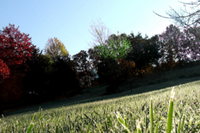
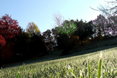

Next Photo
-
Vote
Snowy Shadows
The morning after a big snow, always a landscape, or snowscape, filled with photographic opportunity. This snowscape offers a look at the shadows, textures, and wildlife of the post snow morning. The photo offers purity in the blown out white, also offering the visualization of bright light, and the feeling of something uplifting. The shadows cast by the items in the snow, the mounds of snow, and the snow its self, add the interest to the photo. The mounds were created by the snow filtering through slats in the deck, leaving indentations. They are accented by the shadows they cast, and the light they catch. Another main aspect of the photo are the bird tracks seen in the snow at the forefront of the photo. This subtle addition completes the photo.
More...
Title: Snowy Shadows
Description: The morning after a big snow, always a landscape, or snowscape, filled with photographic opportunity. This snowscape offers a look at the shadows, textures, and wildlife of the post snow morning. The photo offers purity in the blown out white, also offering the visualization of bright light, and the feeling of something uplifting. The shadows cast by the items in the snow, the mounds of snow, and the snow its self, add the interest to the photo. The mounds were created by the snow filtering through slats in the deck, leaving indentations. They are accented by the shadows they cast, and the light they catch. Another main aspect of the photo are the bird tracks seen in the snow at the forefront of the photo. This subtle addition completes the photo.
Keywords: snow,shadows,light,contrast,subtle,pure,snowscape,morning
Hidden: n
Date added: Mon Feb 19 22:40:41 CST 2007
Date taken: Tue Jan 16 14:31:57 CST 2007
Camera: Fujifilm Finepix S5100
Resolution: 2272 x 1704
Mode: Shutter Priority
Shutter speed: 1/640
Flash: Not Used
Exposure time: 1/640
Iso: 100
Metering: Matrix
Aperture: f/6.3
Focal length: 10.7mm
Artist: NathanielGuy Mahieu
Copyright: 2006 NathanielGuy Mahieu
Views: 1159
 
